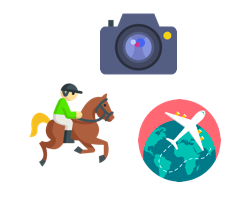

Mes compétences linguistiques
Mes compétences professionnelles

Mes loisirs et passions

Etudiante en Marketing Digitale à Audencia BS, j'ai eu lors de mon parcours, de nombreuses opportunités en termes d'expériences professionnelles et personnelles : différents stages, voyages ou séminaires qui m'ont permis de me forger tout au long de ma formation.
J'ai effectué 2 semestres à Audencia. Le premier en Master 1 qui comprenait un tronc commun (analyse financière, marketing produit, stratégie d'entreprise, comptabilité, etc. Mon deuxième semestre correspond à un Master 2 en spécialisation Marketing à l'ère Digitale. Mes cours sont les suivants : stratégie média, CRM, CMS, SEO, HTML&CSS, rédaction de contenu...
J'ai eu la chance de partir pendant 1 an en échange universitaire en Pologne, à Cracovie. Au delà de l'expérience personnelle, travailler dans un environnement et une culture nouvelle m'ont également permis d'acquérir de nouvelles compétences professionnelles. L'intégralité de mes cours était dispensé en anglais : project management, marketing, communication, business ethics, business culture, etc.
J'ai passé 2 ans à l'IUT Paris Descartes dans une formation commerciale plutôt généraliste. J'ai eu l'occasion d'acquérir de nombreuses compétences à travers mes différents projets et mes différents stages réalisés.